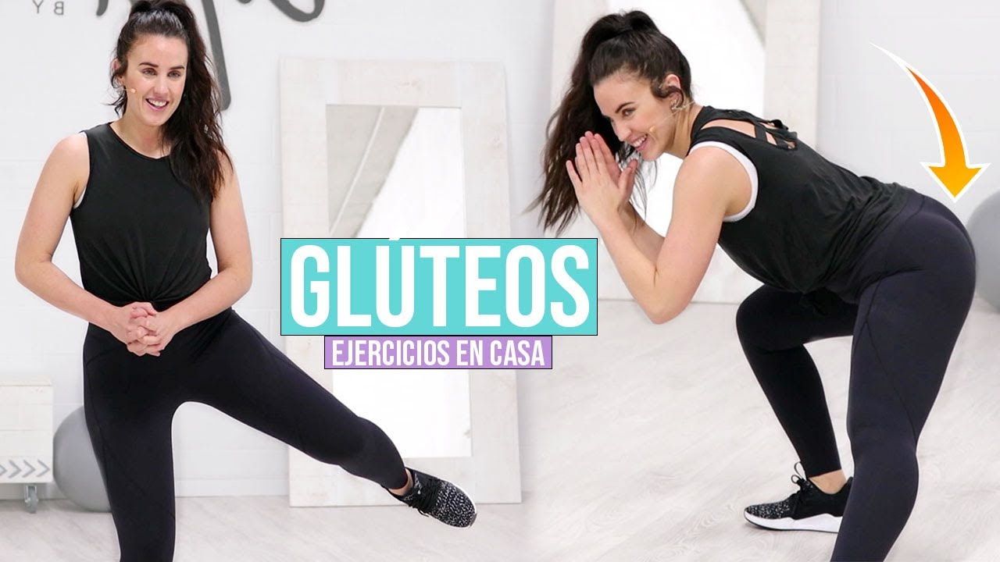
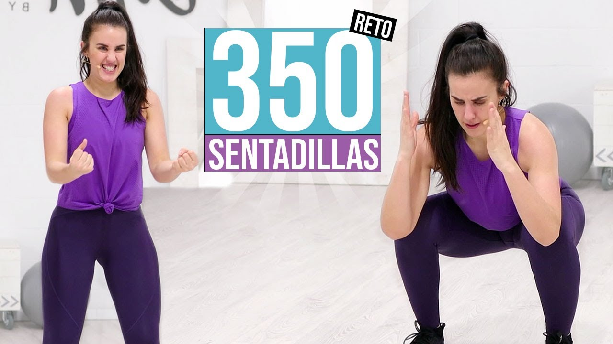
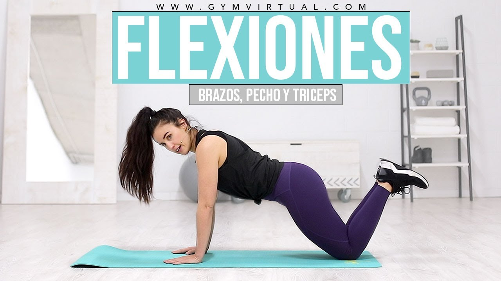

Por eso, es normal que te preguntes ¿cómo me motivo para hacer ejercicio? ¿en dónde se compra un poco de motivación? Si es tu caso y definitivamente no consigues motivarte para hacer ejercicio, sigue leyendo… aquí encuentras un test interactivo para saber qué te motiva realmente y un entrenamiento gratis para convencer a tu mente
  Unete a nuestra comunidad y entrena en directo con Patry